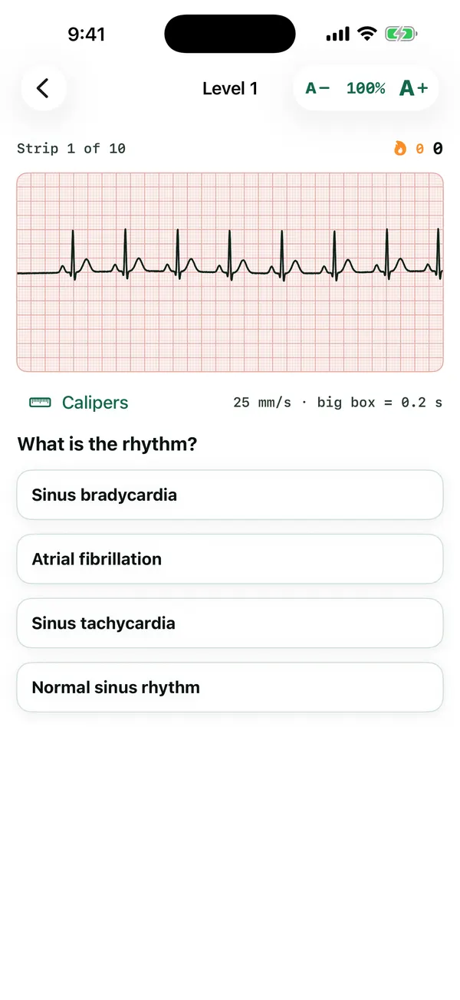

MedForge / Apps / ECG Rhythm Trainer
Cardiovascular · Strip reading
ECG Rhythm Trainer
Read the strip. Name the rhythm.
Core rhythms drawn live on ECG paper. Check rate, regularity, P waves and QRS width, then commit to a diagnosis against the clock.
Free preview: Level 1 and four rhythms. Unlock the full library. $2.99/month or $19.99/year
Live demo of ECG Rhythm Trainer
Try it: name this rhythm
Strips are drawn live in the app. These are pre-rendered samples from the same generator.
Loading the strips…
In the app
A real screen from ECG Rhythm Trainer
From the iPhone app, in a pre-release build. The Android app follows the same design, and the text size can be changed from 40% to 300% on every screen.

Sources
Every fact in this app is cited
These are the references this app draws on. Inside the app, each answer links to its source in a reading window that keeps your place.
- Brugada syndrome (genetics)National Library of Medicine, MedlinePlus Genetics · NIH / NLM MedlinePlus
- Pericardial disordersNational Library of Medicine, MedlinePlus · NIH / NLM MedlinePlus
- Romano-Ward syndrome (genetics)National Library of Medicine, MedlinePlus Genetics · NIH / NLM MedlinePlus
- Sudden cardiac arrestNational Library of Medicine, MedlinePlus · NIH / NLM MedlinePlus
- Wolff-Parkinson-White syndrome (encyclopedia)National Library of Medicine, MedlinePlus · NIH / NLM MedlinePlus
- Heart Attack: What Is a Heart Attack?National Heart, Lung, and Blood Institute · NIH / NHLBI
- Arrhythmias: Long QT SyndromeNational Heart, Lung, and Blood Institute · NIH / NHLBI
- Arrhythmias: Wolff-Parkinson-White SyndromeNational Heart, Lung, and Blood Institute · NIH / NHLBI
- Acute coronary syndromes (NG185): overviewNational Institute for Health and Care Excellence · NICE (UK)
- Anatomy and Physiology 2e: 26.3 Electrolyte BalanceOpenStax, Rice University · OpenStax
- AsystoleStatPearls Publishing, National Library of Medicine (NCBI Bookshelf) · NIH / NLM
- Second-Degree Atrioventricular BlockStatPearls Publishing, National Library of Medicine (NCBI Bookshelf) · NIH / NLM
- Brugada SyndromeStatPearls Publishing, National Library of Medicine (NCBI Bookshelf) · NIH / NLM
- HyperkalemiaStatPearls Publishing, National Library of Medicine (NCBI Bookshelf) · NIH / NLM
- Idioventricular RhythmStatPearls Publishing, National Library of Medicine (NCBI Bookshelf) · NIH / NLM
- Junctional RhythmStatPearls Publishing, National Library of Medicine (NCBI Bookshelf) · NIH / NLM
- Left Bundle Branch BlockStatPearls Publishing, National Library of Medicine (NCBI Bookshelf) · NIH / NLM
- Long QT SyndromeStatPearls Publishing, National Library of Medicine (NCBI Bookshelf) · NIH / NLM
- Premature Atrial ContractionsStatPearls Publishing, National Library of Medicine (NCBI Bookshelf) · NIH / NLM
- Premature Ventricular ComplexStatPearls Publishing, National Library of Medicine (NCBI Bookshelf) · NIH / NLM
- Right Bundle Branch BlockStatPearls Publishing, National Library of Medicine (NCBI Bookshelf) · NIH / NLM
- Acute ST-Segment Elevation Myocardial Infarction (STEMI)StatPearls Publishing, National Library of Medicine (NCBI Bookshelf) · NIH / NLM
- Torsade de PointesStatPearls Publishing, National Library of Medicine (NCBI Bookshelf) · NIH / NLM
- Wolff-Parkinson-White SyndromeStatPearls Publishing, National Library of Medicine (NCBI Bookshelf) · NIH / NLM
- Treatment of acute hyperkalaemia in adults (landing page)UK Kidney Association · UK Kidney Association clinical practice guideline
- Atrial FibrillationNational Library of Medicine, MedlinePlus · NIH / NLM MedlinePlus
- Arrhythmias (encyclopedia)National Library of Medicine, MedlinePlus · NIH / NLM MedlinePlus
- Electrocardiogram (encyclopedia)National Library of Medicine, MedlinePlus · NIH / NLM MedlinePlus
- Heart block (encyclopedia)National Library of Medicine, MedlinePlus · NIH / NLM MedlinePlus
- Pericarditis (encyclopedia)National Library of Medicine, MedlinePlus · NIH / NLM MedlinePlus
- Paroxysmal supraventricular tachycardia (encyclopedia)National Library of Medicine, MedlinePlus · NIH / NLM MedlinePlus
- Sick sinus syndrome (encyclopedia)National Library of Medicine, MedlinePlus · NIH / NLM MedlinePlus
- Fast heart rate - tachycardia (encyclopedia)National Library of Medicine, MedlinePlus · NIH / NLM MedlinePlus
- Ventricular fibrillation (encyclopedia)National Library of Medicine, MedlinePlus · NIH / NLM MedlinePlus
- Ventricular tachycardia (encyclopedia)National Library of Medicine, MedlinePlus · NIH / NLM MedlinePlus
- Atrial FibrillationNational Heart, Lung, and Blood Institute (NIH) · NHLBI / NIH
- Arrhythmias: TypesNational Heart, Lung, and Blood Institute (NIH) · NHLBI / NIH
- Cardiac ArrestNational Heart, Lung, and Blood Institute (NIH) · NHLBI / NIH
- Atrial fibrillation: diagnosis and management (NG196)National Institute for Health and Care Excellence (NICE) · NICE (UK)
- Cardiac Muscle and Electrical ActivityOpenStax, Rice University (peer-reviewed open textbook) · OpenStax (Rice University)
- Atrial FibrillationStatPearls Publishing, National Library of Medicine (NCBI Bookshelf) · NIH / NLM
- Atrial FlutterStatPearls Publishing, National Library of Medicine (NCBI Bookshelf) · NIH / NLM
- Acute Myocardial InfarctionStatPearls Publishing, National Library of Medicine (NCBI Bookshelf) · NIH / NLM
- First-Degree Heart BlockStatPearls Publishing, National Library of Medicine (NCBI Bookshelf) · NIH / NLM
- Third-Degree Atrioventricular BlockStatPearls Publishing, National Library of Medicine (NCBI Bookshelf) · NIH / NLM
- ElectrocardiogramStatPearls Publishing, National Library of Medicine (NCBI Bookshelf) · NIH / NLM
- PericarditisStatPearls Publishing, National Library of Medicine (NCBI Bookshelf) · NIH / NLM
- Sinus BradycardiaStatPearls Publishing, National Library of Medicine (NCBI Bookshelf) · NIH / NLM
- Sinus TachycardiaStatPearls Publishing, National Library of Medicine (NCBI Bookshelf) · NIH / NLM
- Supraventricular TachycardiaStatPearls Publishing, National Library of Medicine (NCBI Bookshelf) · NIH / NLM
- Ventricular FibrillationStatPearls Publishing, National Library of Medicine (NCBI Bookshelf) · NIH / NLM
- Ventricular TachycardiaStatPearls Publishing, National Library of Medicine (NCBI Bookshelf) · NIH / NLM
Keep going